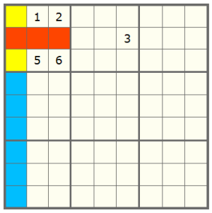

Technique: Locked Candidates
Sudoku Solving Techniques
Locked Candidates
When examining a 3x3 box, one might find that one digit is locked in a specific row (or column) of that box although the exact position cannot be determined yet. This information leads us to confirm that such digit cannot appear in other positions of the same row (or column).
Consider the following partial Sudoku puzzle:

In the first 3x3 box of this Sudoku puzzle, the digit 3 cannot be in those red cells since a 3 has appeared in the same row. Therefore it must be in the first column of this box (actually in one of those two yellow cells). Although we do not know exactly where it should be, it is sure that the digit 3 cannot be in those blue cells in the first column.